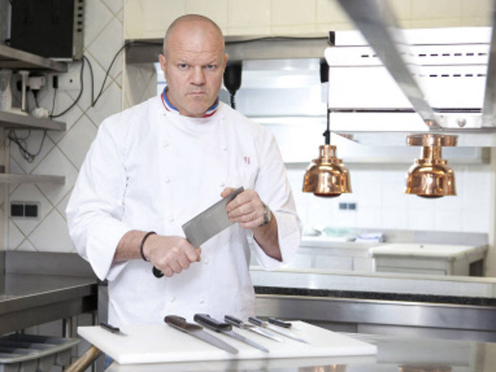

L'homme chauve est en colère et il décide de vous assassiner.
Il n'est pas végétarien et va donc vous cuisiner et vous servir dans
ses restaurants en tant que plat principal.
C'est fou, à quelques décisions près, vous gagniez la partie.